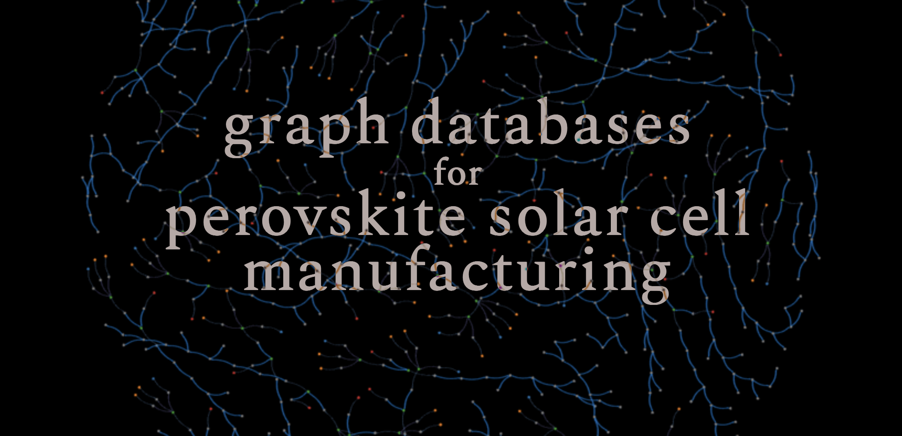
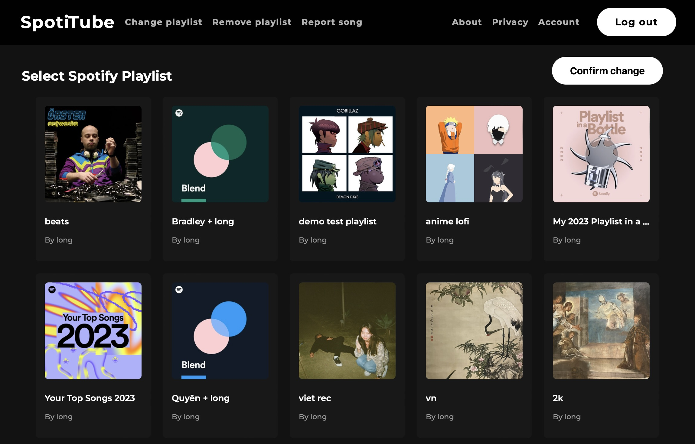
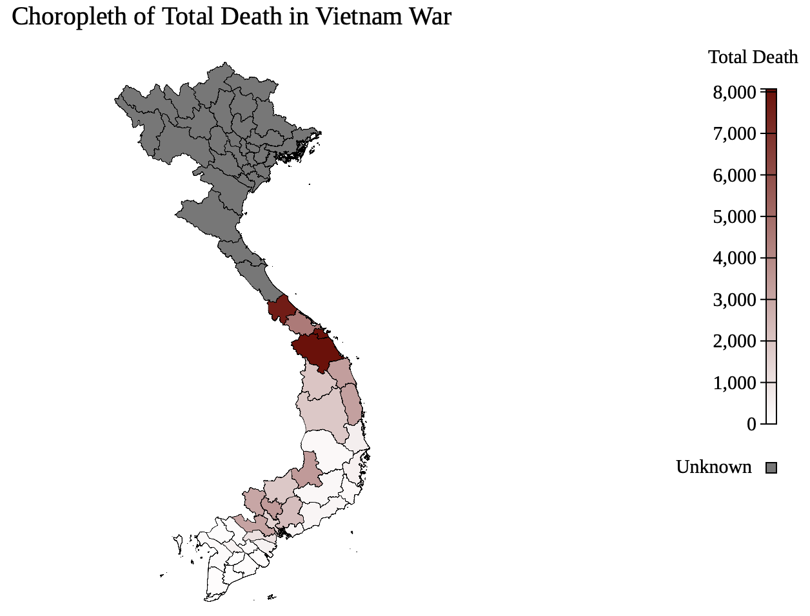

Welcome to my personal website
Please scroll down for more
About
Hi! I'm Long Le. I am currently an Electrical & Computer Engineering graduate student at University of Southern California. Prior to this, I obtained a bachelor's degree in Data Science from UC San Diego.
This portfolio showcases my academic journey, interests, and practical projects over the years.
I am excited to contribute my abilities to a dynamic field and collaborate with talented individuals to create impactful solutions.
Projects
Graph Databases for Perovskite Solar Cell Manufacturing Website GitHub Repo
Language/Framework: Python, Neo4j (database), pandas (data processing)
Description: Designed and built a graph database for a solar cell research lab, allowing analysis of large data volumes across batches to optimize solar cell efficiency. Collaborate with a groupmate to implement a data pipeline to transform the lab's raw JSON output to database's input.
SpotiTube Demo Video GitHub Repo
Language/Framework: Python, Flask (web framework), OAuth 2.0, REST API
Description: Full stack web appplication to transfer and continuously update a playlist from Spotify to YouTube Music. The app follows standard OAuth 2.0 flow to securely log in the users from both Spotify and Google. Everyday, the app's scheduler periodically scans the selected playlist and updates newly added songs to YouTube Music.
Vietnam War Veterans Visualization Python Notebook Database
Language/Framework: Python, pandas (analysis), JavaScript (visualization), D3.js (visualization), BeautifulSoup4 (web scraping), Flask (database backend), SQLite3 (database)
Description (Analysis): Web scraped using BeautifulSoup to obtain the data. Performed exploratory data analysis and feature engineering to extract geological patterns in casualties. Utilized D3.js to visualize and plot different maps and charts on the website.
Description (Database): Designed schema table and imported the raw data to SQLite3 database. Built a website using Flask framework to query for multiple keywords search in SQLite.
